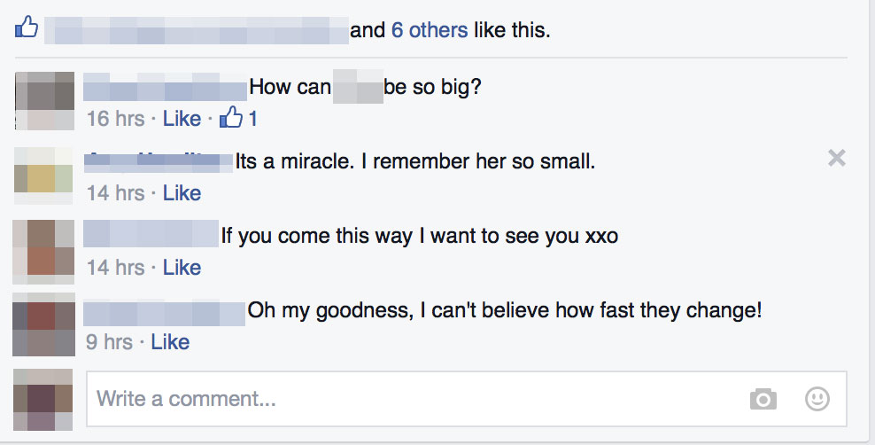

I see it over and over again.
Typically from the same people, and typically interjected into a post from the same few of my friends.
I'm talking about the Post Hijacker.
If you already know what I'm talking about then you probably are getting hot under the collar already. It's when someone injects a comment, into a comment stream, that has little or nothing to do with the OP.
Furthermore, said comment should really be a DM, since it quite literally has nothing to do with anyone else involved in the conversation, save perhaps the original poster, or, in some edge cases, a memeber of the commenting crew.
Here's an example:

Let's follow the conversation, and see if you can spot where the hijacker appears.
- First comment: obviously talking about someone in a picture.
- Second comment: obviously also talking about that someone in a picture.
- Third comment: a direct invitation to the original poster about getting together.
- Fourth comment: obviously also talking about the person in the picture.
If you said the hijacker appears in comment three, YOU WIN!!!
Post Hijackers:
Stop. Hijacking. Comment streams.
It's quite f*!$ing annoying.
In fact, I'll let you in on a little-known secret: Facebook makes an app specifically for what you are trying to do. Kindly use it, and quit polluting otherwise pointed discussions, regardless of how trivial they may be.
End rant.
--K